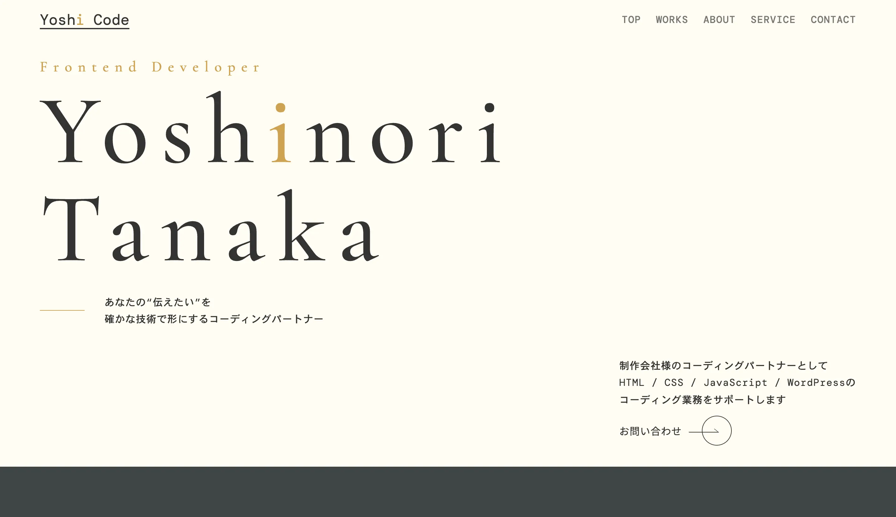

建設業コーポレートサイト
保守性を意識したCSS設計と、WordPressでの柔軟な運用を想定したコーディングで構築。スマートフォンから快適に閲覧できるレスポンシブ対応を丁寧に実装しました。
保守性を意識したCSS設計と、WordPressでの柔軟な運用を想定したコーディングで構築。スマートフォンから快適に閲覧できるレスポンシブ対応を丁寧に実装しました。

デザインの世界観を崩さないよう、細部のアニメーションやフォント選定にまでこだわってコーディング。予約ボタンへのスムーズな導線をUIで表現しました。

情報量が多いサイトでも迷わせないよう、レイアウトの優先順位を意識して実装。WordPressのブロック構成も更新しやすさを考慮して組みました。

自身のポートフォリオとして設計・デザイン・コーディングまで一貫して制作。視線の流れや余白設計を意識し、情報が伝わりやすい構成に仕上げました。アニメーションやインタラクションにも配慮し、ユーザー体験と保守性の両立を意識した実装を行っています。
※掲載している実績は一部です。守秘義務の都合上、非公開の制作実績も多数ございます。詳細についてはお問い合わせください。